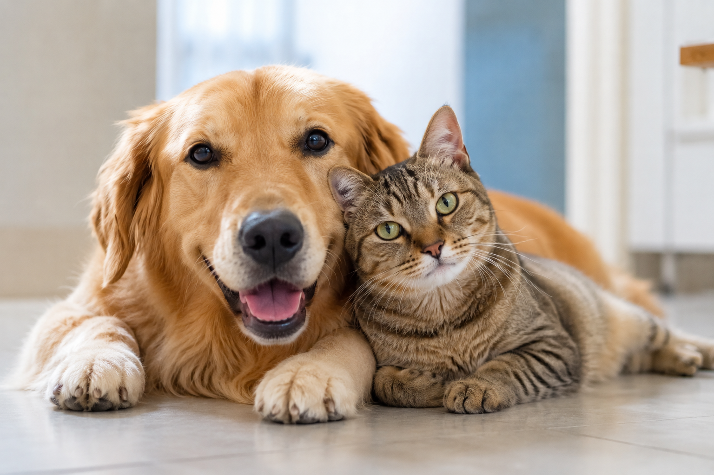
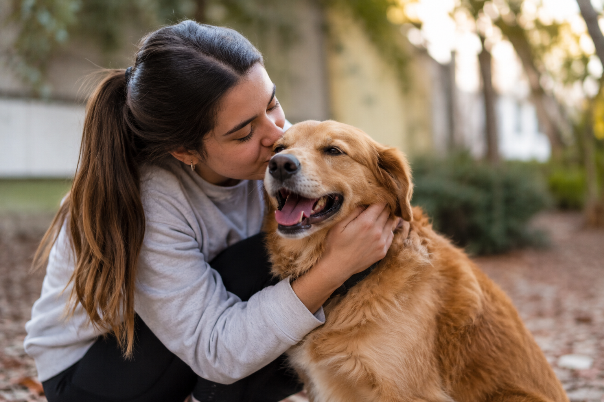
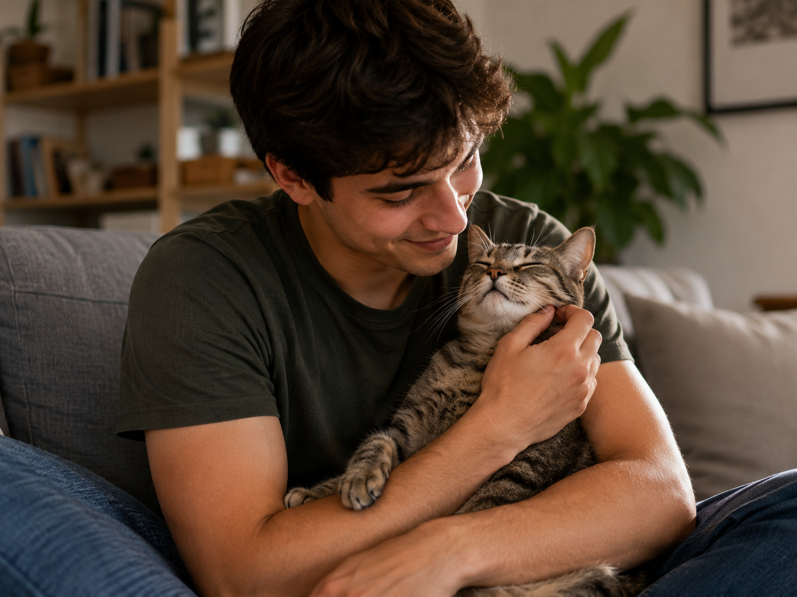
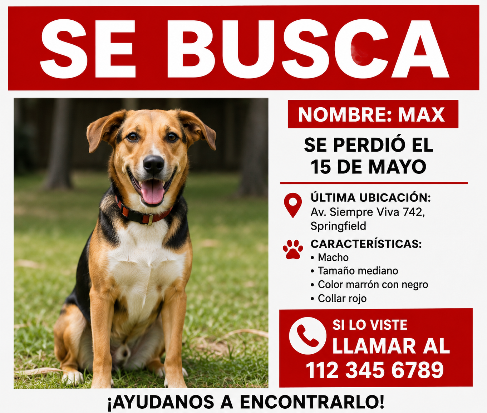
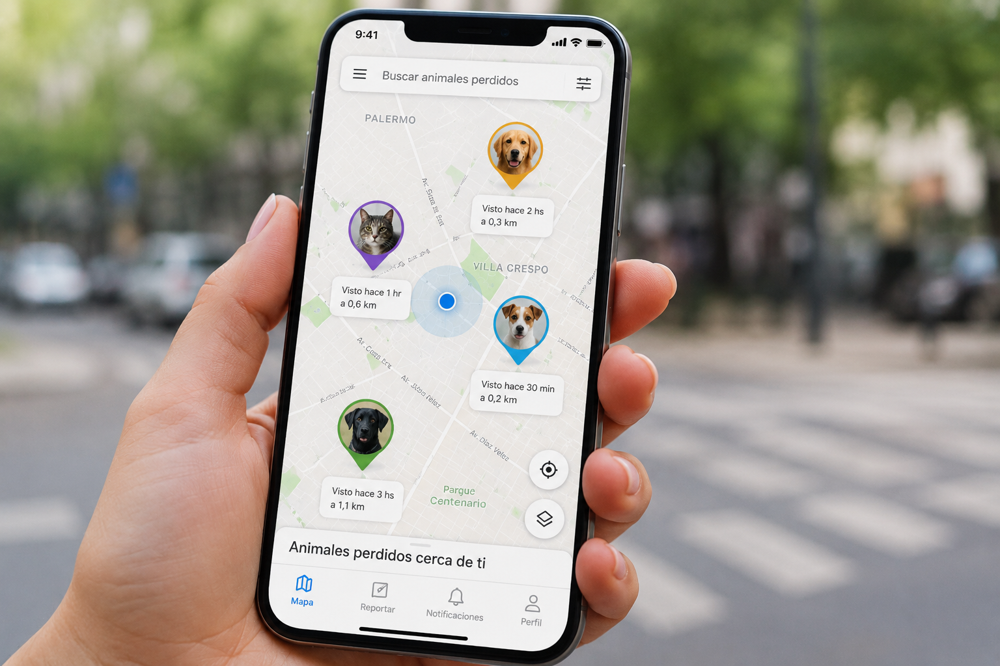

Tu perro se perdió
Publicás la alerta con foto, datos y última zona vista. Personas cercanas reciben la notificación y pueden reportar avistamientos.
Perdido · Adopción · Tránsito · Rescate
UbiCat tiene cuatro botones, cada uno para una situación distinta. Elegís el que corresponda y la app te guía desde ahí.

Cómo funciona
Cada botón abre un flujo distinto dentro de la app. No hay un solo camino: usás el que necesites en ese momento.
Publicás la alerta con foto, datos y última zona vista. Personas cercanas reciben la notificación y pueden reportar avistamientos.
Explorás perfiles de perros que buscan familia en tu zona. Ves fotos, edad y condiciones, y contactás al publicador desde la app.
Indicás que podés acoger temporalmente a un perro. Marcás disponibilidad y condiciones para ayudar mientras busca hogar definitivo.
Publicás un rescate con foto y ubicación exacta. Conectás con quien pueda trasladarlo, ofrecer tránsito o identificar al dueño.
Dentro de la app
Un recorrido claro por función. Todo esto ocurre adentro de UbiCat, una vez que te registrás o descargás la app.




Comunidad que cuida
"Publicamos a Toby como perdido a las 8 de la mañana. A las 11 ya estaba en casa. Tres vecinos avisaron por la app."
"Ofrecí tránsito sin saber si podía. La app me guió paso a paso y en dos semanas Nina ya tenía adoptante."
"Adopté a Simón con seguimiento post-adopción incluido. Hoy duerme a los pies de la cama y es el rey de la casa."
Preguntas frecuentes
Menos de un minuto. Completás nombre, email y teléfono. Verificamos tu identidad para que todos operen con confianza.
No. UbiCat es gratuita. Podés usar las cuatro funciones — Perdido, Adopción, Tránsito y Rescate — sin pagar nada.
Verificamos email y teléfono. Los chats son privados. Además, cada usuario tiene reputación visible para detectar perfiles poco confiables.
Para mantener alertas confiables, necesitás una cuenta verificada. Así evitamos reportes falsos que retrasan los casos reales.
El botón rojo Perdido. Subís foto, datos y última ubicación vista. La alerta llega a personas cercanas que pueden avisar si lo ven.
Es acoger temporalmente a un perro rescatado mientras encuentra hogar definitivo. Vos definís tu disponibilidad al usar el botón azul Tránsito.
Sumate hoy
Registrate acá o descargá UbiCat en tu celular. Las cuatro funciones están adentro de la app.